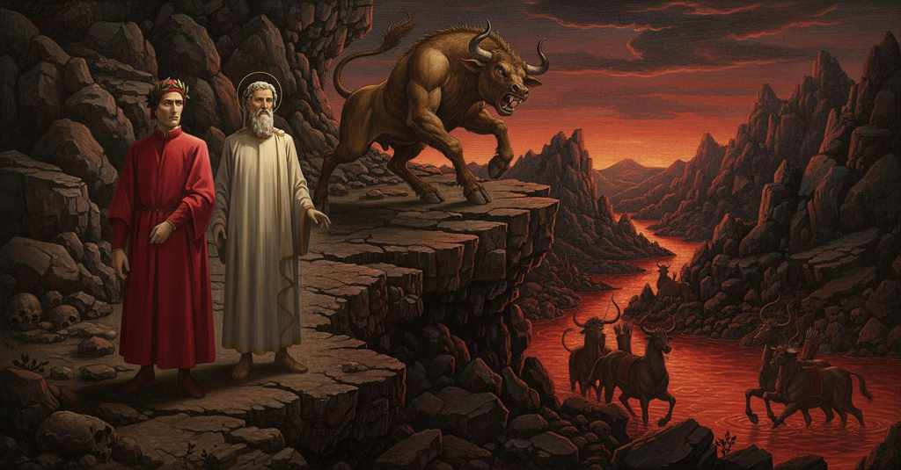

Inferno — Canto 12

1
Era lo loco ov’ a scender la riva
The place where to descend the bank
我らが崖を下るためにやって来た場所は、
2
venimmo, alpestro e, per quel che v’er’ anco,
we came, was rugged and, for what was also there,
険しく、
3
tal, ch’ogne vista ne sarebbe schiva.
such, that every eye would have shunned it.
また、そこにいたもののせいで、いかなる視線もそれを避けるほどであった。
4
Qual è quella ruina che nel fianco
Like that landslide which on the flank
トレントのこちら側で、
5
di qua da Trento l’Adice percosse,
on this side of Trento struck the Adige,
アディジェ川を襲ったあの崩落のように、
6
o per tremoto o per sostegno manco,
either by earthquake or by failed support,
地震によるか、あるいは支えを失ったかして、
7
che da cima del monte, onde si mosse,
that from the top of the mountain, from where it moved,
それが動いた山の頂から、
8
al piano è sì la roccia discoscesa,
to the plain the rock is so shattered,
平地へと岩がかくも砕け落ち、
9
ch’alcuna via darebbe a chi sù fosse:
that it would offer some path to one who was above:
上にいる者には何らかの道を与えるような：
10
cotal di quel burrato era la scesa;
such was the descent of that ravine;
そのようなのが、かの峡谷の下り道であった。
11
e ’n su la punta de la rotta lacca
and on the point of the broken precipice
そしてその崩れた裂け目の先端には、
12
l’infamïa di Creti era distesa
the infamy of Crete was stretched out,
クレタの汚名が横たわっていた、
13
che fu concetta ne la falsa vacca;
who was conceived in the false cow;
あの偽の牝牛の中で孕まれた者が。
14
e quando vide noi, sé stesso morse,
and when he saw us, he bit himself,
そして我らを見ると、自らを噛み、
15
sì come quei cui l’ira dentro fiacca.
like one whom rage breaks from within.
内なる怒りに打ち砕かれる者のようであった。
16
Lo savio mio inver’ lui gridò: «Forse
My sage toward him cried: “Perhaps
我が賢師は彼に向かって叫んだ、「おそらく
17
tu credi che qui sia ’l duca d’Atene,
you think that here is the Duke of Athens,
お前はここにいるのがアテナイの公だと信じているのか、
18
che sù nel mondo la morte ti porse?
who up in the world dealt death to you?
上の世界でお前に死を与えた者が？
19
Pàrtiti, bestia, ché questi non vene
Get away, beast, for this one does not come
去れ、獣よ、この者は来たのではない、
20
ammaestrato da la tua sorella,
instructed by your sister,
お前の姉に導かれて。
21
ma vassi per veder le vostre pene».
but goes to see your punishments.”
だが、お前たちの罰を見るために進むのだ」。
22
Qual è quel toro che si slaccia in quella
Like that bull that breaks its bonds in that moment
あの雄牛が、その瞬間に鎖を断ち切るように、
23
c’ha ricevuto già ’l colpo mortale,
it has already received the mortal blow,
すでに致命的な一撃を受け、
24
che gir non sa, ma qua e là saltella,
that cannot walk, but here and there leaps about,
歩くことはできず、あちこち跳ね回るだけの、
25
vid’ io lo Minotauro far cotale;
I saw the Minotaur act in such a way;
私はミノタウロスがそのようにするのを見た。
26
e quello accorto gridò: «Corri al varco;
and that sharp one cried: “Run to the pass;
そして、かの賢明な人は叫んだ、「通路へ走れ。
27
mentre ch’e’ ’nfuria, è buon che tu ti cale».
while he rages, it is good that you descend.”
あれが怒り狂っている間に、下りるのがよい」。
28
Così prendemmo via giù per lo scarco
So we took our way down through the discharge
かくして我らはその瓦礫の道を下り始めた、
29
di quelle pietre, che spesso moviensi
of those stones, which often moved
その石は、しばしば動いた
30
sotto i miei piedi per lo novo carco.
beneath my feet because of the new load.
新たな重みである我が足の下で。
31
Io gia pensando; e quei disse: «Tu pensi
I went along thinking; and he said: "You are thinking
私は考えながら進んだ。すると彼が言った。「お前は考えているのだな、
32
forse a questa ruina, ch’è guardata
perhaps of this ruin, which is guarded
おそらくこの崩落跡のことを。それは守られている
33
da quell’ ira bestial ch’i’ ora spensi.
by that bestial rage that I just now quenched.
今しがた私が鎮めた、あの獣の怒りによって。
34
Or vo’ che sappi che l’altra fïata
Now I want you to know that the other time
さて、知っておくがよい、私が前に一度
35
ch’i’ discesi qua giù nel basso inferno,
that I descended down here into the lower hell,
この下層地獄へ下りてきた時には、
36
questa roccia non era ancor cascata.
this rock had not yet fallen.
この岩はまだ崩れ落ちてはいなかった。
37
Ma certo poco pria, se ben discerno,
But surely a little before, if I discern well,
だが確か、もし私の見立てが正しければ、その少し前に、
38
che venisse colui che la gran preda
He came who took the great prey
あの方が来られたのだ、大いなる獲物を
39
levò a Dite del cerchio superno,
from Dis out of the supernal circle,
上の圏のディーテから奪い去った方が。
40
da tutte parti l’alta valle feda
on all sides the deep, foul valley
あらゆる方角で、この深く汚れた谷は
41
tremò sì, ch’i’ pensai che l’universo
trembled so, that I thought the universe
ひどく揺れたので、私は宇宙が
42
sentisse amor, per lo qual è chi creda
felt love, by which some believe
愛を感じたのかと思ったほどだ。その愛によって、ある者は信じる
43
più volte il mondo in caòsso converso;
the world has more than once been turned to chaos;
世界は幾度も混沌へと転じたと。
44
e in quel punto questa vecchia roccia,
and at that moment this ancient rock,
そしてその瞬間に、この古びた岩は、
45
qui e altrove, tal fece riverso.
here and elsewhere, was so overturned.
ここでも他の場所でも、このように崩れ落ちたのだ。
46
Ma ficca li occhi a valle, ché s’approccia
But fix your eyes on the valley, for it approaches,
だが目を谷に向けよ、近づいてくるぞ
47
la riviera del sangue in la qual bolle
the river of blood in which boils
血の川が。その中で煮え滾っているのは
48
qual che per vïolenza in altrui noccia».
whoever through violence does harm to others."
暴力によって他者を害した者たちだ」。
49
Oh cieca cupidigia e ira folle,
O blind cupidity and foolish wrath,
おお、盲目な貪欲と狂気の怒りよ、
50
che sì ci sproni ne la vita corta,
that so spur us on in the short life,
短い人生で我らをかくも駆り立て、
51
e ne l’etterna poi sì mal c’immolle!
and in the eternal then so badly soak us!
そして永遠の生では、かくも酷く我らを浸すものか！
52
Io vidi un’ampia fossa in arco torta,
I saw a wide ditch bent into an arc,
私は弧を描いて曲がった広い堀を見た、
53
come quella che tutto ’l piano abbraccia,
like one that embraces the entire plain,
まるで平原全体を抱きかかえるかのように、
54
secondo ch’avea detto la mia scorta;
according to what my guide had said;
我が導き手が言った通りに。
55
e tra ’l piè de la ripa ed essa, in traccia
and between the foot of the bank and it, on a trail
そして崖の麓とそれとの間を、列をなして
56
corrien centauri, armati di saette,
ran centaurs, armed with arrows,
ケンタウロスたちが走っていた、矢で武装し、
57
come solien nel mondo andare a caccia.
as they used to go hunting in the world.
生前の世界で狩りに出ていた時のように。
58
Veggendoci calar, ciascun ristette,
Seeing us descend, each one stopped,
我らが下りるのを見て、各々が立ち止まり、
59
e de la schiera tre si dipartiro
and from the troop three departed
その一団から三騎が離れ出た
60
con archi e asticciuole prima elette;
with bows and little spears chosen beforehand;
あらかじめ選ばれた弓と小槍を手に。
61
e l’un gridò da lungi: «A qual martiro
and one shouted from afar: “To what torment
そして一人が遠くから叫んだ、「いかなる刑罰を
62
venite voi che scendete la costa?
do you come, you who descend the slope?
受けに来たのだ、お前たち、この崖を下りてくる者よ？
63
Ditel costinci; se non, l’arco tiro».
Tell it from there; if not, I draw the bow.”
そこから言え。さもなくば、弓を引くぞ」。
64
Lo mio maestro disse: «La risposta
My master said: “The reply
我が師は言った、「その答えは
65
farem noi a Chirón costà di presso:
we will make to Chiron there nearby:
あちらでケイロンに直接しよう。
66
mal fu la voglia tua sempre sì tosta».
ill was your will ever so hasty.”
悪しきことに、お前の意志は常にあまりに性急であったな」。
67
Poi mi tentò, e disse: «Quelli è Nesso,
Then he touched me, and said: “That one is Nessus,
それから私に触れ、言った、「あれはネッソスだ、
68
che morì per la bella Deianira,
who died for the lovely Deianira,
美しきデイアニラのために死に、
69
e fé di sé la vendetta elli stesso.
and made of himself his own revenge.
そして自らの手で自らの復讐を成し遂げた者だ。
70
E quel di mezzo, ch’al petto si mira,
And that one in the middle, who looks at his chest,
そして中央の、胸を見つめている者は、
71
è il gran Chirón, il qual nodrì Achille;
is the great Chiron, who nurtured Achilles;
偉大なるケイロン、アキレウスを育てた者。
72
quell’ altro è Folo, che fu sì pien d’ira.
that other is Pholus, who was so full of wrath.
もう一人はポロス、かくも怒りに満ちていた者だ。
73
Dintorno al fosso vanno a mille a mille,
Around the ditch they go by thousands,
堀の周りを幾千となく巡り、
74
saettando qual anima si svelle
shooting with arrows whichever soul lifts itself
矢を放っている、どの魂が抜け出ようとも
75
del sangue più che sua colpa sortille».
from the blood more than its guilt allotted it.”
その罪が定めた以上に血の中から」。
76
Noi ci appressammo a quelle fiere isnelle:
We approached those swift beasts:
我らはその俊敏な獣たちに近づいた。
77
Chirón prese uno strale, e con la cocca
Chiron took an arrow, and with the nock
ケイロンは一本の矢を取り、その筈（はず）で
78
fece la barba in dietro a le mascelle.
pushed his beard back behind his jaws.
顎の後ろへと鬚をかき分けた。
79
Quando s’ebbe scoperta la gran bocca,
When he had uncovered his great mouth,
その大きな口を露わにすると、
80
disse a’ compagni: «Siete voi accorti
he said to his companions: “Have you noticed
仲間に言った、「お前たちは気づいたか、
81
che quel di retro move ciò ch’el tocca?
that the one behind moves what he touches?
後ろの者が、触れるものを動かすのを？
82
Così non soglion far li piè d’i morti».
Thus are not accustomed to do the feet of the dead.”
死者の足はそうはしないものだ」。
83
E ’l mio buon duca, che già li er’ al petto,
And my good leader, who was already at his chest,
そして我が善き導き手は、すでに彼の胸元にいたが、
84
dove le due nature son consorti,
where the two natures are joined,
二つの本性が結びつくところに、
85
rispuose: «Ben è vivo, e sì soletto
replied: “Indeed he is alive, and so alone
答えた、「確かに生きている。そしてこうして独りで
86
mostrar li mi convien la valle buia;
it is my duty to show him the dark valley;
彼に暗い谷を見せねばならぬ。
87
necessità ’l ci ’nduce, e non diletto.
necessity brings him to it, and not delight.
必要が我らを導くのであり、楽しみではない。
88
Tal si partì da cantare alleluia
One parted from singing hallelujah
ある方がアレルヤを歌うのをやめて離れ、
89
che mi commise quest’ officio novo:
who committed to me this new office:
この新たな役目を私に託されたのだ。
90
non è ladron, né io anima fuia.
he is not a robber, nor I a thieving soul.
彼は盗人ではなく、私もまた欺く魂ではない。
91
Ma per quella virtù per cu’ io movo
But by that power by which I move
だが、私がこの歩みを進めるその徳によって、
92
li passi miei per sì selvaggia strada,
my steps through so savage a road,
かくも険しい道を行く私の歩みを、
93
danne un de’ tuoi, a cui noi siamo a provo,
give us one of yours, whom we may be near,
お前たちの中から一人を我らに与えよ、我らが近くにいるために、
94
e che ne mostri là dove si guada,
and who may show us where one fords,
そして、どこに浅瀬があるかを示し、
95
e che porti costui in su la groppa,
and who may carry this one on his back,
そして、この者をその背に乗せて運ぶように、
96
ché non è spirto che per l’aere vada».
for he is not a spirit that goes through the air.”
彼は空を行く霊魂ではないのだから」。
97
Chirón si volse in su la destra poppa,
Chiron turned on his right haunch,
ケイロンは右の臀部の方へ向き直り、
98
e disse a Nesso: «Torna, e sì li guida,
and said to Nessus: “Go back, and guide them,
そしてネッソスに言った、「戻れ、そして彼らを導け、
99
e fa cansar s’altra schiera v’intoppa».
and make way if another troop meets you.”
もし他の隊列に出くわしたら、道を開けさせよ」。
100
Or ci movemmo con la scorta fida
Now we moved on with our faithful guide
さて我らは信頼できる案内に伴われ進んだ
101
lungo la proda del bollor vermiglio,
along the bank of the crimson boiling,
朱の滾りの岸に沿って、
102
dove i bolliti facieno alte strida.
where the boiled ones were making high shrieks.
そこでは煮られる者たちが高い叫び声をあげていた。
103
Io vidi gente sotto infino al ciglio;
I saw people submerged up to their eyelids;
私は眉まで浸かっている人々を見た。
104
e ’l gran centauro disse: «E’ son tiranni
and the great centaur said: “These are tyrants
すると大ケンタウロスは言った、「彼らは暴君で、
105
che dier nel sangue e ne l’aver di piglio.
who laid hands on blood and on possessions.
血と財産に手をかけた者たちだ。
106
Quivi si piangon li spietati danni;
Here they lament their pitiless damages;
ここで彼らは非情な害悪を嘆いている。
107
quivi è Alessandro, e Dïonisio fero
here is Alexander, and fierce Dionysius
ここにはアレッサンドロが、そして獰猛なディオニュシオスが、
108
che fé Cicilia aver dolorosi anni.
who made Sicily have sorrowful years.
シチリアに苦難の歳月をもたらした者がいる。
109
E quella fronte c’ha ’l pel così nero,
And that brow that has such black hair,
そしてあのかくも黒い髪の額の者は、
110
è Azzolino; e quell’ altro ch’è biondo,
is Azzolino; and that other who is blond,
アッツォリーノだ。そしてあのもう一人の金髪の者は、
111
è Opizzo da Esti, il qual per vero
is Opizzo da Esti, who in truth
オピッツォ・ダ・エスティで、実に彼は
112
fu spento dal figliastro sù nel mondo».
was snuffed out by his stepson up in the world.”
この世で継子に殺されたのだ」。
113
Allor mi volsi al poeta, e quei disse:
Then I turned to the poet, and he said:
その時私は詩人の方を向いた、すると彼は言った、
114
«Questi ti sia or primo, e io secondo».
“Let him now be first to you, and I second.”
「今は彼を第一とし、私を第二とせよ」。
115
Poco più oltre il centauro s’affisse
A little farther on the centaur fixed his gaze
少し先でケンタウロスは足を止め、
116
sovr’ una gente che ’nfino a la gola
upon a group who up to their throats
喉まで
117
parea che di quel bulicame uscisse.
seemed to emerge from that boiling stream.
その滾る流れから出ているように見える人々の前に立った。
118
Mostrocci un’ombra da l’un canto sola,
He showed us a shade off to one side, alone,
彼は片隅に独りいる影を我々に示し、
119
dicendo: «Colui fesse in grembo a Dio
saying: “That one, in God’s own bosom, cleft
言った、「あやつは神の御胸で刺し貫いたのだ
120
lo cor che ’n su Tamisi ancor si cola».
the heart that on the Thames still drips with blood.”
テムズ川のほとりで今なお祀られる心臓を」。
121
Poi vidi gente che di fuor del rio
Then I saw people who out of the river
次に私は川の外に
122
tenean la testa e ancor tutto ’l casso;
held their heads and even their whole chests;
頭と、さらには胸の全体まで出している人々を見た。
123
e di costoro assai riconobb’ io.
and of these I recognized a great many.
そして彼らのうちの多くを私は見分けた。
124
Così a più a più si facea basso
Thus, more and more, it became shallow,
このようにして次第に浅くなってゆき
125
quel sangue, sì che cocea pur li piedi;
that blood, so that it cooked only the feet;
その血は、ついにただ足を煮るだけとなった。
126
e quindi fu del fosso il nostro passo.
and that was where we made our way across the ditch.
そしてそこが堀を渡る我らの道であった。
127
«Sì come tu da questa parte vedi
“Just as you see on this side
「お前がこちら側で見るように
128
lo bulicame che sempre si scema»,
the boiling stream that always diminishes,”
この滾る流れは常に浅くなっていくが」
129
disse ’l centauro, «voglio che tu credi
said the centaur, “I want you to believe
とケンタウロスは言った、「信じるがよい
130
che da quest’ altra a più a più giù prema
that on this other side its bed presses down
向こう側では次第に底が
131
lo fondo suo, infin ch’el si raggiunge
lower and lower, until it comes around
深くなり、ついに達することを。
132
ove la tirannia convien che gema.
to where tyranny is made to groan.
暴政が呻吟せねばならぬ場所へと。
133
La divina giustizia di qua punge
Divine justice on this side stings
神の正義は、かしこで刺し貫く
134
quell’ Attila che fu flagello in terra,
that Attila who was a scourge on earth,
地上の鞭であったあのアッティラを、
135
e Pirro e Sesto; e in etterno munge
and Pyrrhus and Sextus; and eternally milks
そしてピュロスとセクストゥスを。そして永遠に搾り出すのだ
136
le lagrime, che col bollor diserra,
the tears, which with the boiling it unlocks,
滾りによってこじ開けられる涙を、
137
a Rinier da Corneto, a Rinier Pazzo,
from Rinier da Corneto, from Rinier Pazzo,
リニエール・ダ・コルネートから、リニエール・パッツォから、
138
che fecero a le strade tanta guerra».
who waged so much war upon the highways.”
彼らは街道であれほどの戦を仕掛けた者たちだ」。
139
Poi si rivolse e ripassossi ’l guazzo.
Then he turned and recrossed the ford.
それから彼は身を返し、浅瀬を渡り帰った。